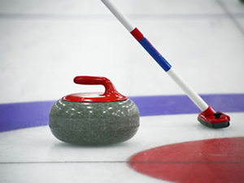

Greenacres Ice Problems
28 September 2026

Greenacres Ice Rink have experienced problems with the ice after running up for the start of the season. Richard Harding has apologised and is doing everything possible to restore the ice. Here is an extract from Richard's email to the Club:
Unfortunately we will be unable to open the Club for curling on Tuesday 22 September as planned.
As many of you will recall from last season we experienced air locks in our rink floor during throughout last season and we were also losing the seal around sheets E and F which resulted in a serious challenge to maintain level ice on these two sheets. The air locks led to areas of the ice which did not freeze to the same temperature as the rest of the floor and this meant we could not use these sheets from time to time where this issue occurred throughout last season.
We have carried out significant works on the rinks during the summer break. First of all we have renewed the seal around both ice sheets, A to D and E & F so we should no longer lose any ice around the perimeter of either hall. The result should mean more level ice. We have also inserted several new bleed points to allow any air in our system to escape through these new non-return valves which are closer to the areas we experienced air-lock issues last season.